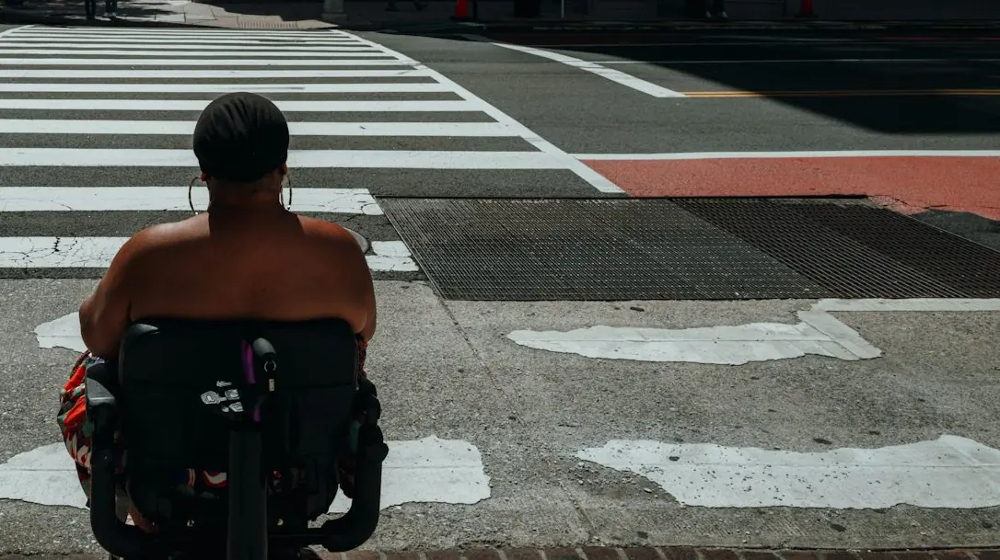

Dirty Condition
- Location
- An address
- Details
- Access
- Nearby
- Repeat?
- Evidence
- 1 photo
- Agency
- Set by the category

311 Live lets residents report a city problem by showing it and describing it aloud.
Book a MeetingResidents open 311 Live, point their camera at the problem and speak. A live AI agent observes the scene, understands their description and identifies the location.
It requests only what the image can't show, drafts a complete service request and suggests the responsible department. The resident confirms it, and 311 staff receive a ticket a crew can act on the first time.
Or any of the questions a crew needs answered:

The agent sees through the camera and talks with you out loud.

AgentI see loose trash and bags partly blocking the sidewalk. Is this what you'd like to report?
ResidentYes, I just saw it today.
AgentCan people using wheelchairs still pass, or is it completely blocked?
ResidentA wheelchair user would have trouble getting through.
AgentThanks. I've written up the report. Please check it before I send it.

The agent reads the scene before the resident says a word, using the camera, their voice and the location.
Only what the city needs and the photo can't show.
“Is it blocking the sidewalk, curb ramp or bike lane?”
“Can people still walk past, or is it completely blocked?”
“Is this near a school or a transit stop?”
“Has this trash been there for more than a day?”
What happened, where, who it affects and which department should handle it. The resident checks it, then sends it.

The report is written from the conversation, which removes the half-completed, error-prone submissions that manual entry produces.
Staff begin with a clear suggestion, rather than working out where a report belongs.
They can see the data used and the suggested routing before anything is sent.
Each ticket arrives with its evidence and a summary the resident confirmed. Staff approve it, not the AI, and the resident is notified of the outcome.

Sample data. Swipe to see more

Sample data. Swipe to see more
Where problems cluster.
How often they come back.
Who is affected, and how much.
Report in seconds, in any language, and follow it to resolution.
Complete tickets, the right team the first time, and a closed loop.
Hotspots, frequency and severity to plan ahead.
calls and online contacts in FY2026
contacts through the mobile app in FY2026
service request types
languages and dialects served by phone
NYC311 figures. Sources: Mayor's Management Report, FY2026 and NYC311
Book a meeting for a live demo and a closer look at the product.